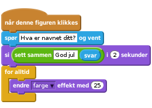
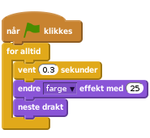
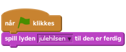

Scratch
Julekort
Vi skal lage et julekort i Scratch. Det skal ha noen enkle funksjoner og animasjoner. Når det er ferdig vil det se omtrent slik ut.

Når du er klar til å starte velger du Programmering i menyen øverst. Da kommer vi inn i Scratch.

Klikk på scenen ved siden av kattefiguren Sprite1 i vinduet for figurer. Trykk på  for å importere en ferdig bakgrunn. Velg den bakgrunnen du vil. Slett deretter den tomme bakgrunnen som ligger der.
for å importere en ferdig bakgrunn. Velg den bakgrunnen du vil. Slett deretter den tomme bakgrunnen som ligger der.

Slett kattefiguren Sprite1 ved å høyreklikke på ham og slette.
Velg nye figurer fra biblioteket. Legg til isbjørnen, snømannen og juletreet.

Nå skal vi få figurene til å gjøre ting når de blir klikket på.
Velg isbjørnen og fanen Skript og lag denne koden. Når isbjørnen blir klikket på skal den si "God jul!". Deretter skal den skifte utseende hvert sekund, 10 ganger.
![når denne figuren klikkes
si [God jul!] i (2) sekunder
gjenta (10) ganger
neste drakt
vent (1) sekunder
slutt](ad1c5a05d98662f66dc11917df98d13db45138a6.png)
Klikk på isbjørnen og se om koden din virker.
Sier isbjørnen "God jul!"?
Forandrer isbjørnen stilling?
Velg snømannen og fanen Skript og lag denne koden. Snømannen skal spørre etter navnet ditt. Den setter svaret inn i en ny setning. Deretter skal den skifte farge.

Klikk på snømannen og se om koden din virker.
Spør snømannen om navnet ditt?
Svarer snømannen med navnet ditt når du har skrevet det inn?
Forandrer snømannen farge?
Velg juletreet og fanen Skript og lag denne koden. Nå skal juletreet skifte farge og utseende.

Trykk på det grønne flagget og se om alt virker.
Endrer treet farge?
Danser treet fra side til side?
Da har du jobbet godt! Om du fortsatt har ledig tid kan du:
Legge til din egen velkomsthilsen, for eksempel "God jul" eller du kan synge din egen julesang.
Klikk på Scene, og velg fanen Lyder.

Ta op din egen lyd, og gi den et navn, for eksempel julehilsen. Gå deretter inn på Skript, og legg inn følgende kode:

Kanskje finne på noen andre morsomme animasjoner? Snømannen kan danse eller turne litt? Kan vi ha snakkende eller hoppende gale julepresanger? Du bestemmer!
Gi julekortet ditt et navn. Velg deretter Lagre nå fra Filmenyen.

Deretter kan du publisere julekortet ditt ved å velge Legg ut.